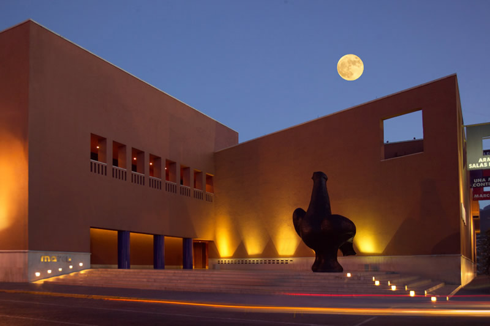
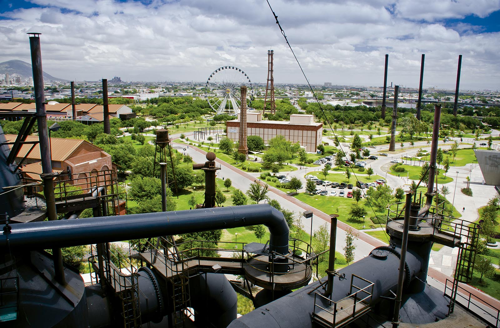

Turismo
|  |
Museo de Arte Contemporáneo de MonterreyFue diseñado por el arquitecto Ricardo Legorreta e inaugurado el 28 de junio de 1991. En la entrada al museo se observa la escultura La paloma, de Juan Soriano. Exhibe más de 100 piezas de arte contemporáneo y organiza visitas guiadas, conciertos, talleres, subastas y eventos culturales. Ofrece catálogos y programas educativos para maestros. Cuenta con auditorio, restaurante, cafetería y tienda. |

|
Santa LuciaEn la actualidad, es el río artificial más largo de Latinoamérica con una extensión de 2.5 kilómetros y es considerado como una de las 13 maravillas de México creadas por el hombre. Es el lugar preferencial de familias regiomontanas para pasear por las tardes y fines de semana. |
|  |
FundidorasLas Fundidoras es un parque urbano que se encuentra en el centro de Monterrey, Nuevo León, México. Fue construido en 1989 por el arquitecto Ricardo Legorreta. El parque está ubicado en el centro de la ciudad, en la intersección de las avenidas Fundidora y Constitución, en el barrio de Santa Catarina. El parque está rodeado por edificios de oficinas y departamentos, así como por el Museo de Arte Contemporáneo de Monterrey. |
|
|